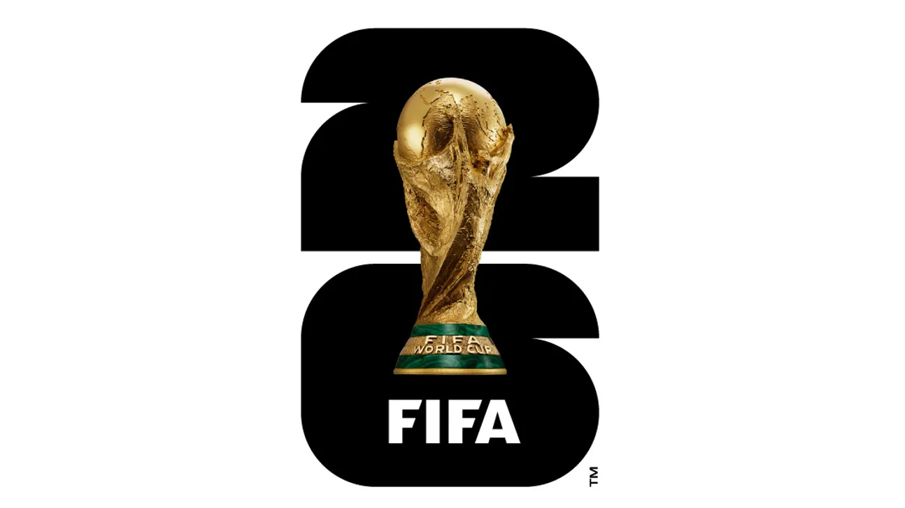

World Cup
2026 წლის ფიფა-ს მსოფლიო საფეხბურთო ჩემპიონატი მიმდინარეობს ჩრდილოეთ ამერიკის სამ ქვეყანაში: აშშ-ში, კანადასა და მექსიკაში.
ტურნირი 11 ივნისს დაიწყო და 19 ივლისს დასრულდება.
ეს არის ისტორიაში პირველი მუნდიალი, სადაც მონაწილეთა რაოდენობა 48 ნაკრებამდე გაიზარდა და ჯამში 104 მატჩი ტარდება. ამ მომენტისთვის
ჯგუფური ეტაპი უკვე დასრულებულია და დაწყებულია პლეი-ოფის (1/16-ფინალის) დაპირისპირებები.

მიმდინარე ეტაპი და ფორმატი
- მონაწილეები: 48 გუნდი გადანაწილებული იყო 12 ჯგუფში (თითოეულში 4 ნაკრები).
- პლეი-ოფი: მომდევნო ეტაპზე (1/16 ფინალში) გავიდა თითოეული ჯგუფის ორ-ორი საუკეთესო და დამატებით 8 საუკეთესო მესამეადგილოსანი.
- მატჩების განრიგი: 1/16-ფინალური შეხვედრები 28 ივნისიდან 3 ივლისამდე იმართება.
საინტერესო ფაქტები ტურნირის შესახებ
- 3 მასპინძელი და 16 ქალაქი: მატჩებს სამი ქვეყნის 16 სხვადასხვა ქალაქი მასპინძლობს (მექსიკაში, კანადასა და აშშ-ში).
- ფინალი: მსოფლიო ჩემპიონატის ფინალური მატჩი გაიმართება 19 ივლისს ნიუ-იორკ/ნიუ-ჯერსის სტადიონზე (MetLife Stadium).
- რეკორდსმენი მექსიკა: მექსიკა გახდა პირველი ქვეყანა ისტორიაში, რომელიც მესამედ მასპინძლობს მსოფლიო ჩემპიონატს (1970 და 1986 წლების შემდეგ).